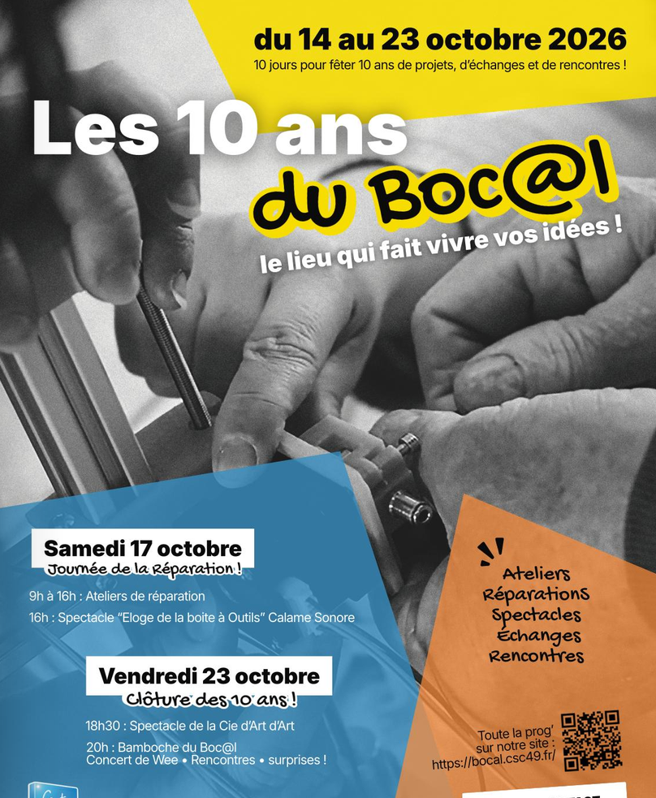

SITE EN CONSTRUCTION
SITE EN CONSTRUCTION
.webp)
.webp)
.webp)
.webp)
.webp)
.webp)
.webp)
.webp)
.webp)
.webp)
.webp)
.webp)
.webp)
.webp)
.webp)
.webp)
.webp)
.webp)
.webp)
.webp)
.webp)
.webp)
Je développe depuis plusieurs années une pratique artistique
collective et située.
Formée au design puis à l’art, j’ai construit une démarche ancrée dans le faire, l’expérimentation et la collaboration. Mon travail interroge la frontière entre l’artiste et le spectateur, en invitant ce dernier à devenir acteur de l’œuvre.
Comme en témoignent les projets présentés dans mon portfolio, le participatif constitue un axe central de ma pratique: il ne s’agit pas seulement de produire une forme, mais de créer des situations, des expériences partagées et des espaces de rencontre.
Ma pratique témoigne de ma perception du design, en tant qu’hybridation. Selon moi, le « faire » devrait revenir au centre des préoccupations. Dépossédés de nos moyens de productions, par le biais de l’industrialisation à outrance, nous sommes arrivés à en oublier « l’intelligence de la main. »
C’est pourquoi, j'essaye toujours à pousser les autres à faire, et à leur montrer, qu’ils savent, qu’ils peuvent savoir, et qu’ils peuvent faire.
Cette perception n’est pas décorellée d’une certaine vision sociale du champ artistique. Familière des lieux d’échanges réciproque de savoirs, tels que les FabLabs et ateliers partagés, ma pratique se situe souvent à la frontière entre la fabrique de lien social, la performance artistique et le faire ensembles.
Je trouve beaucoup de satisfaction à voir les autres fiers de leur création, et si je devais résumer mon approche, je la décrirait comme une création de principes pour aider les autres dans leur projets
Les 10 ans du Bocal de Chemillé
Retrouvez un extrait de mon travail dans le hall du centre social le chemillois du 14 au 24 octobre 2026
Biennale de l'orchidée du 6 au 8 novembre
Je serai présente à la biénale de l'orchidée pour l'association Orchidée 91
Contacts
Email : chazallet.elsa@hotmail.fr
Instagram : @elsa.chazallet
Curriculum Vitae
2026 / [Exposition collective] Chemillé (49).
Valorisation des créateurs dans les FabLabs pour les 10 ans du bocal de Chemillé.
2026 / [Performance] pour Nov'Art, Rives du Loir en Anjou
(49).
Médiation chantée et improvisée, à destination du public de No'Art 2026.
2025/ Rally tampon, Inauguration Métamorphose, Angers
(49).
Rally Tampon participatif réalisé pour l’inauguration de l’immeuble métamorphose
à Angers.
2025/ Rally Tampon, 140 ans de Giffard, Angers (49).
Rally Tampon participatif réalisé pour l’anniversaire des 140 ans de Giffard.
2025/ [Exposition] + [Performance chantée] « Passant.es », Trélazé (49).
Commissariat Hélène Cheguillaume.
Exposition des jeunes diplômés de l’ESAD d’Angers, aux anciennes écuries de Trélazé.
2024/ [Exposition] « Giffard inspire les jeunes designers », Angers (49).
Commissariat Elsa Chazallet et Victor Chaplais.
Exposition dans l’ancienne distillerie pour promouvoir le patrimoine industriel du liquoriste angevin, Giffard.
2024/ [Exposition] « ZONE BLANCHE « jeunes designers », Angers (49).
Commissariat Lucie Plessis.
Exposition des jeunes diplômés à la galerie 5 de la bibliothèque universitaire à Belle Beille.
2024/ [Exposition] « Fresh Oddities », Angers (49).
Comissariat Lucie Plessis.
Mettre à l’honneur la bibliothèque universitaire de belle beille, Galerie 5 de l’Université d’Angers.
2023/ [Performance] Made in Cndc x B.A.D., Angers (49).
Mise en scène Julien Lacroix.
collaboration entre B.A.D design et le Centre National de Danse Contemporaine.
2022/ [Scénographie Collective] Symposium international, La pensée active de Gilles Deleuze, Angers (49).
Comissariat BDD (Bloc de Devenir).
Concerts, Conférences et Banquet.
2022/ [design/paysagisme] Jardin minéral du château d’eau, Trélazé (49).
Cinquième prix pour l’Appel à projet pour la valorisation du château d’eau de la manufacture de Allumettes.
2021/ [Exposition] L’atelier des mémoire vives et imaginaires, Chapelle Saint Louis, Poitiers (86).
Commissariat Christophe Legac.
Une histoire des relations entre l’art et l’informatique.
Boutique
La boutique arrive bientôt.